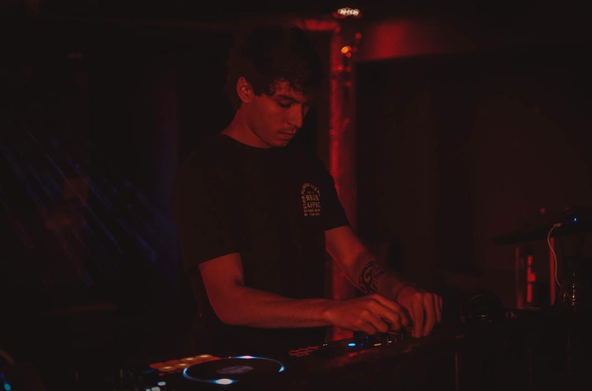

El DJ local de Posadas, Misiones, ha sido seleccionado para
tocar en un prestigioso evento mundial, seguido de una gira por
toda Europa. La noticia ha generado gran entusiasmo en la
comunidad de música electrónica local, ya que es una oportunidad
única para que el artista muestre su talento en una audiencia
global. Este logro es un testimonio del esfuerzo y dedicación
del DJ, y sin duda es un gran paso adelante en su carrera.